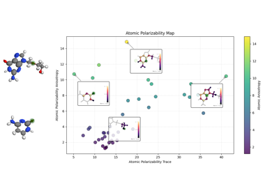

Examples¶
This page lists a few examples of visualizations based on chemiscope. Rather than providing a demonstration of a scientifc application, as for the examples on the main page, these examples consist in short Python scripts that demonstrate how to make a chemiscope viewer file that uses some particular features (e.g. atom coloring or shape visualization).
You can find more usage examples, in combination with other atomistic simulation packages, in the chemiscope chapter of the atomistic cookbook.


Visualize biomolecules with MDAnalysis or chemfiles
Visualize biomolecules with MDAnalysis or chemfiles

Headless mode